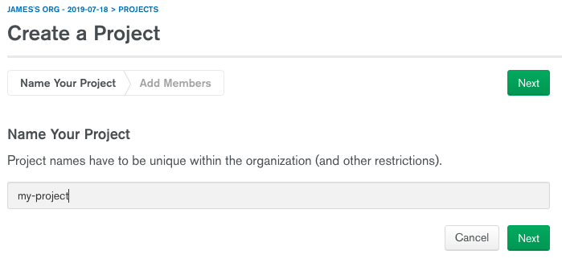
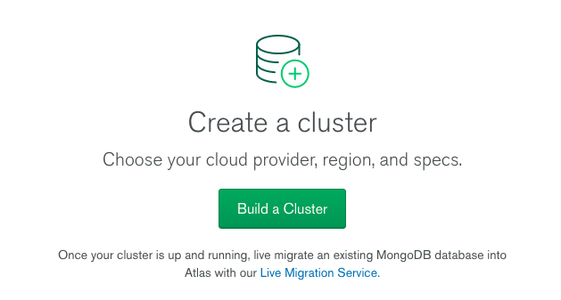
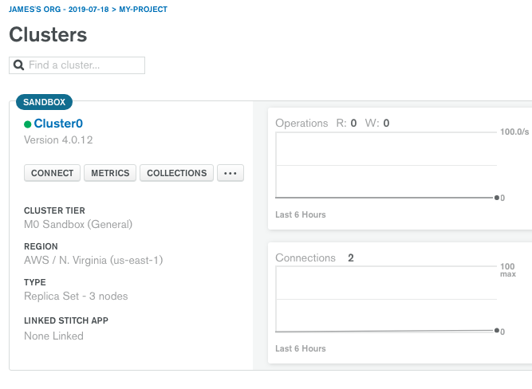
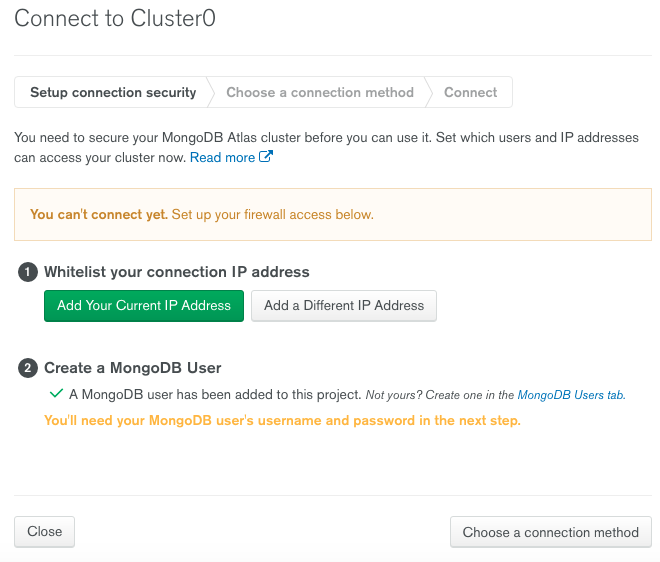
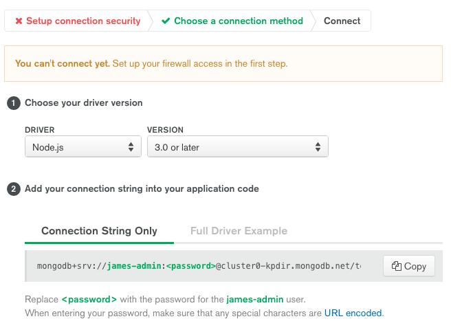

How to deploy your express-mongoDB API + React frontend to Heroku
👋
If you’re like me, you’re probably a frontend dev who enjoys writing JavaScript but you’ve never worked with the backend. That said, you probably know, from a birds-eye view, how it generally works. In this article, I’ll go over how I used express and mongoDB to write a RESTful api to be used with my React frontend. I’ll also go over how to setup a cluster on Mongo Atlas and connect express to it.
Assumptions
- you already have a react app created.
- you already have an express app created.
Resources I used
There are a couple of blog posts that go over deploying your react/express app in much higher detail and, quite frankly, they were extremely helpful in my endeavors. The only thing those posts lacked was the mongoDB and mongoAtlas portion. Here’s those articles
–
Okay, let’s get started
1) Combining your clientside and serverside code
First, copy your react app (the folder containing the project files) is inside of the root of your express project so that your file tree looks like this:
|- package.json |
2) Create a mongo atlas account
Navigate to the mongo atlas site and sign up for a free account.
3) Setting up the cluster
After you’ve signed up, we need to configure a mongo atlas project and cluster, and then create our first database on that cluster.

- On the next screen you can just click on ‘create project’ without filling anything out. After that, you’ll see the main dashboard. Click on ‘build a cluster’.

- From here you don’t need to mess with any of the options. Simply click on ‘create cluster’ at the bottom right in the banner. Afterwards you’ll see your cluster dashboard:

- Click on the connect button from the cluster dashboard and follow the steps for creating a mongo user for the cluster and whitelisting IP addresses. To whitelist all IP addresses (helpful for when we push to heroku), add
0.0.0.0to the whitelist.


- At this point, you can proceed to choose a connection method, select ‘connect your application’ and copy the string per the instructions on the site.
Note: you’ll be replacing the <password> portion of that string with the password you created for your cluster’s user (you made this like 2 minutes ago lol).
- Quick last thing: from the cluster dashboard, click on collections and select the option to add your own data. From here you can create your first database and collection. I did ‘my-db’ and ‘posts’ for the database and collection.
4) Connecting to your cluster from express
Open up server.js and add the following code:
mongoose.connect( |
If you are familiar with the dotenv npm package, you’ll have a .env file that has a DB_CONNECTION=mongostring value. For simplicity, we can just actually use the string instead.
5) Setting up the proxy (clientside)
We need to set up the proxy so you can call the express api from React without using http://localhost:3001 (port number isn’t important for this ex). Navigate to your clientside package.json file and add:
"proxy": "http://localhost:3001" |
We also need to replace http://localhost:3001 with /api/yourDefaultRoute in any AJAX calls made in your React app. If you’re using Redux, this will likely be in your actions.js file(s). If you’re using local component state, it’ll likely be in any components that use the componentDidMount() lifecycle hook to fetch data. Ex:
componentDidMount() { |
6) Setting up the proxy (serverside)
Go back into the root directory of your express app and open up server.js. We need to make sure node is serving the built version of our clientside app. We also want to ensure we’ve updated our express routes so that the proxy works.
const cors = require('cors') |
In case you were wondering what Post was in that last snippet, here’s the ‘Post’ mongoose schema we’re importing.
const mongoose = require('mongoose') |
7) Add heroku post-build script to serverside package.json
Phew, getting there! Now navigate to your root (express’) package.json and add this script:
"heroku-postbuild": "cd client && npm install && npm run build" |
to the "scripts" object.
Ok so that concludes the setup in your project folder. Feel free to test that everything still works by running your react app and express api in separate terminals and test your AJAX calls. Everything working? Eff yeah, let’s continue!
8) Installing and configuring Heroku
We need to make sure we have heroku installed on our machine, create the heroku app via the terminal, and run the deploy command. Here’s the command for installing heroku.
$ brew tap heroku/brew && brew install heroku |
(if you are on windows or linux, here’s the instructions for those OSes: https://devcenter.heroku.com/articles/heroku-cli)
–
Did that work? Great! Now run each of these, one after the other:
$ git init |
If all went well, you should see the build logs flood your terminal and the end result should look something like this:
-----> Build succeeded! |
😄 🎆 🔥 🔥 🔥
9) LAST and MOST CRUCIAL STEP IMO: double check that you enabled a global 0.0.0.0 whitelist for your cluster PLS
Go into mongo atlas and ensure you’ve enabled a global IP address whitelist for your mongoDB cluster (per step 3 in this tutorial). If you don’t, your app will be running but your data won’t ever get fetched. You’ll have a network tab full of 503 network errors 😅 (this had me stuck for quite a while. Nevermind the fact that I probably should have been asleep at the time I was hammering away on this project at 2am….)
SICK, we are all done.
Go to your project’s URL (provided by the terminal, or via heroku’s dashboard on their website) and be amazed by what you’ve accomplished! Pro-tip: on macOS cmd+click will open links from the terminal in your default browser
If you want to see my working example, you can check it out here. ❤
P.S. This was my first blog post. Feedback is welcome! I hope y’all enjoyed this post and/or found it useful.
–
James